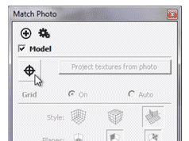

Photo Point Tool
Adds a guide through a point on a Matched Photo.
Tool Operation
Pick a point in a Matched Photo scene to add a guide line.
Activate another scene which shows the same point.
Use the Line tool to construct a line from the guide.
Click to learn about more advanced operations...